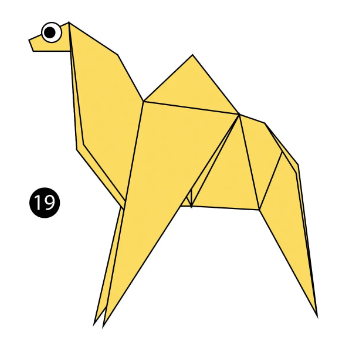
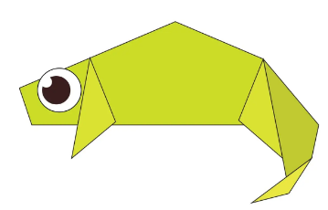

Origami Designs
Follow Us
Some Animals Origamies

Camel Origami
Interesting Facts About Camel
- Camel's ears are funny
- Camel can move easily across the sand because of its specially designed feet
- When they find water, they will drink as much as possible

Chameleon Origami
Interesting Facts About Chameleon
- Chameleons are the reptils that are part of the iguna suborder
- Changing skin color is an mportant part of chameleons among chameleons
- Most chameleons are the prehensile tail that they use to wrap around tree branches